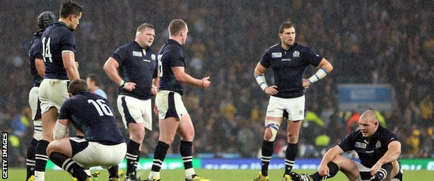
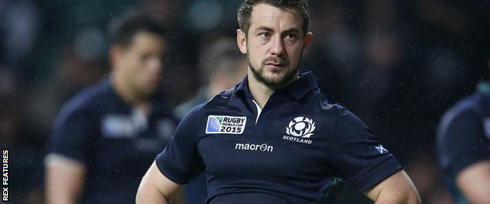
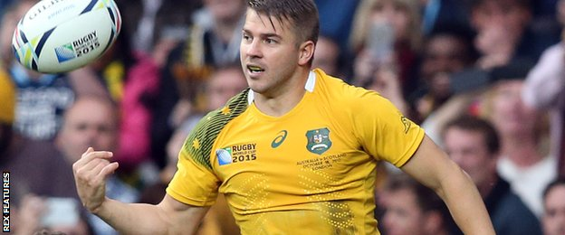
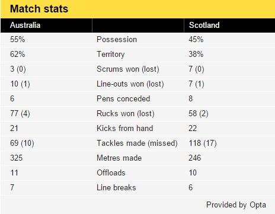

Scotland suffered a devastating loss as Australia won a thrilling quarter-final with a controversial late penalty.
In a pulsating eight-try match Mark Bennett's interception try with seven minutes to go seemed to have sealed one of the great World Cup upsets.
But with time running out referee Craig Joubert called a deliberate offside when replays seemed to indicate the ball had come off a Wallaby player.
Bernard Foley stroked over the three points to steal the game away.
At the final whistle Joubert ran for the tunnel to a deafening chorus of boos, Scotland's players and vast support shattered by the cruel finale.
Scotland's defeat means that for the first time in history there will be no northern hemisphere team in the World Cup semi-finals.
But all the talk will be of Joubert's late decision and later behaviour, even if the laws of the game meant he could not ask for assistance from the television match official for the fateful penalty.
Replays being shown on the big screens inside the ground as Foley lined up his kick meant that the referee was almost the only man among the 80,000 who did not realise an error may have been made.
Australia will now meet Argentina in next weekend's semis but they will be mightily relieved to have escaped from a battle which pushed them to their limits.
Scotland's last win at Twickenham was 32 years ago, but a team that ended this year's Six Nations with the wooden spoon produced one of their nation's finest displays to come agonisingly close to reaching the last four for the first time since 1991.
Australia dominated the early exchanges, and after Foley almost wriggled across the try-line his centre Tevita Kuridrani bounced through Tommy Seymour's ineffective tackle, drew the last defender and put Adam Ashley-Cooper away into the right-hand corner.
But Scotland struck back through a Greig Laidlaw penalty and then roared into a shock lead when Peter Horne darted through off a badly defended ruck after a series of muscular drives from his forwards.
Laidlaw's conversion and another penalty extended the advantage to 13-5, before Kurtley Beale's long mis-pass freed Drew Mitchell on the left to score Australia's second try.
Foley again could not land his conversion, and when Scotland's forwards won a scrum penalty Laidlaw took the lead back to six.
But as a breathless first half came to a crescendo, Australia kicked a penalty to the corner, set up the rolling maul off the line-out and shoved Michael Hooper over the line.
Foley's third miss meant the Wallabies still trailed by a point at the break, and they had never before won a World Cup match from such a position.
Yet within a few minutes they were ahead. Sean Maitland was controversially sin-binned for a deliberate knock-on, Australia drove again off the line-out and Mitchell dived in for his second try as Will Genia exploited the space vacated by Scotland's left winger.
This time Foley did convert, only for Laidlaw's boot to keep Scotland in touch - and when Ashley-Cooper had a try ruled out by the TMO for a knock-on missed by almost everyone else, the blue-shirted thousands in the crowd roared with renewed hope.
Their team responded in wonderful fashion. Finn Russell charged down Foley's horrible kick, gathered and fed the onrushing Seymour off the deck to make it a one-point game.
Again the momentum swung, Scotland losing their own line-out inside their own 22 to set up a series of drives that ended with Kuridrani crashing over, Laidlaw answering with his fifth penalty for 32-27 with 10 minutes to go.
Bennett then picked off James Slipper's poor pass to dive under the posts, the flawless Laidlaw converting to give Scotland a two-point lead and put victory within their grasp.
But then came the late, late drama, Scotland losing their own line-out, the ball ricocheting loose and Joubert making his critical call.
Matt Giteau won the sponsor's award, his all-round game in midfield essential as Foley suffered a difficult afternoon until his late nerveless penalty.
But Scotland captain Laidlaw's 19 points from a possible 19 from the boot and energy off the breakdown kept his side in the game and almost inspired them to a remarkable win.
Australia coach Michael Cheika: "It's a penalty and that's the way it works. We gave away a try on a charge-down, and an intercept - and that one through the ruck wasn't good. We've got to block that area.
"All credit to Scotland, it was a great game and we just had to get through it somehow. We got the job done, we got five tries and we'll enjoy moving on."
Scotland coach Vern Cotter: "It's pretty tough. The guys played very well, they never let go and fought the whole way, and it's fine margins isn't it?
"They put this team, who were favourites for the tournament, under pressure. This will make them better and more confident. They did believe throughout the game - and we nearly got there."